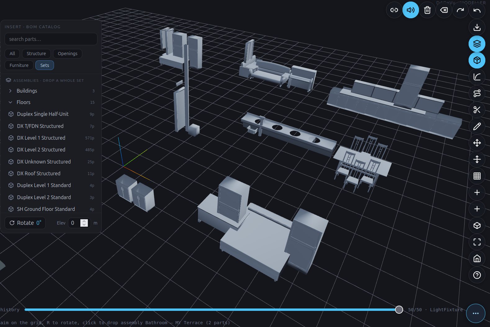

DAGeVu Modeller — User Guide¶
← Back to the User Guide · Home
Work in progress. The DAGeVu modeller is an early, spine-proven authoring surface — this guide is deliberately a short intro plus an index of the toolbar icons. Expect it to grow as the modeller does.
⚠ UNDER DEPRECATION — a major direction shift is in progress (2026-06-25)¶
The from-scratch authoring surface described below is not broken — it is being inverted. We are experimenting with a new primary direction for the modeller, and the existing tools (insert · sketch · extrude · sweep · the grid) remain available while the shift lands. Nothing here is going away without a replacement; this note is so you don't feel stranded if the surface starts changing under you.
The inversion — don't author from scratch; open a ready-made building and edit it. Instead of drawing a model up from a blank grid, you 📂 Open an existing
extracted.db(a real building's ARC model — its digital twin) and edit that. The other disciplines and dimensions are not re-drawn — they follow: structure, MEP, the 4D schedule, the 5D cost and the ERP all auto-complete by "crawling" against the ARC (RouteWalk), and every edit and every follow is one signed operation the enterprise folds from.Why the shift — four benefits you feel immediately: - Speed — you start complete (a real building), not from an empty canvas. - Completion — open a bare ARC and the rest fills itself in (RouteWalk), rather than you placing every part. - Reuse — the real building is the substrate; you compose and edit batches, never reconstruct. - Trust — the opened twin is a faithful, verified reconstruction, so editing starts from truth (no invention).
The underlying principle: Open = ARC only. What you open and edit is the architectural model — the single editable substrate. Structure / MEP / 4D / 5D / ERP are shown but derived (they regenerate against your ARC edits). This makes the digital twin editable + generative (it completes itself), not a read-only mirror.
How it works (the inversion at a glance):
Status: the first slice — the 📂 Open icon and the editable BOM Tree in the Outliner — is live behind the experimental
?bomtreeflag. The auto-complete (RouteWalk) and the geometry-on-canvas editing land next. The classic authoring surface documented below stays usable throughout.
What it is¶
DAGeVu is a browser BIM authoring surface that sits beside the read-only viewer. Instead of editing a file, you apply operations — insert a component, sketch a profile, extrude, sweep, fillet — and the model is a deterministic fold of that signed operation log. The op-log is the feature tree: every action is recorded, replayable, and reversible, and the same signed-log idea drives the Kernel-ERP engine.
Open it: red1oon.github.io/bim-ootb/viewer/modeller.html (desktop — the B-rep kernel is heavy). The Home button returns to the Matrix landing.

Your first insert — the BOM catalog¶
The fastest way to build is to assemble, not draw. Tap the Insert tool (the cube icon in the toolbar — open the ⋯ pill rail at the bottom‑right if the pills are collapsed) to open the INSERT · BOM CATALOG panel on the left:
- Find a component. Type in search parts…, or narrow with the filter chips —
All · Structure · Openings · Furniture · Sets. The catalog is extracted from the real
component library (
component_library.dbplus the per-building BOMs), so what you see are actual parts and pre-built assemblies. - Pick a part — or a whole set. Single parts drop one element. Sets are assemblies (whole BOM sets) grouped by level — Buildings · Floors · Rooms · Sets · Items — each collapsible, with a part-count badge (e.g. Duplex Single Half-Unit, DX Level 1 Structured). Pick one to drop the entire recipe at once.
- Aim and place. The status line prompts "aim on the grid, R to rotate, click to place". Move the cursor over the grid to position the ghost preview; press R to rotate (the Rotate angle in the panel footer updates); set Elev (metres) to lift it to a storey height; then click to drop it.
- It's a signed op. The placement lands as one operation in the op-log — visible on the history
scrubber at the bottom and fully undoable (
Ctrl+Z). An assembly drops as a single grouped op of N parts, each seated and oriented from the recipe — e.g. doors and windows take their host wall's facing automatically, rotating with the wall rather than landing flat.
From there, use the toolbar pills to refine: move/rotate a placed object, sketch and extrude new geometry, cut, sweep an MEP run, or bump a component's level of detail. The Outliner panel (left) lists the placed elements; collapse it with its chevron to free up the canvas.
The toolbar — icon index¶
The toolbar is a ⋯ pill rail at the bottom-right: tap ⋯ to fan the icon-only glass pills up,
and hover any pill for its name. The ? Help pill opens the TOOLBAR · PILL REGISTRY — the live
list of every tool's icon, name, and keyboard shortcut (Esc always cancels the current mode).
| Icon | Does |
|---|---|
| ⋯ Toolbar | Fan the toolbar pills open / closed (bottom-right) |
| ? Help | Toolbar & shortcuts — the live pill registry |
| Home | Back to the Matrix landing |
| Fit | Zoom to fit — frames the selection, or the whole scene (F) |
| Iso | Cycle the view: Iso ⇄ Top |
| Wall | Draw a wall |
| Opening | Place an opening (door / window) in a wall |
| Grid | Show / add a construction grid |
| Move Grid | Drag a gridline — attached walls recompose with it |
| Move | Move the selected object — drag an axis handle or nudge with the arrow keys (M) |
| Sketch | Start a 2D sketch |
| Extrude | Push a sketch profile into a solid |
| Axis | Set the constraint intent the solver enforces on the sketch |
| Cut | Boolean-cut one solid with another |
| Route | Define a route to sweep a profile along (e.g. an MEP run) |
| Sweep Run | Sweep the profile along the route |
| Fillet | Round a selected solid's picked edges |
| Apply | Commit the pending fillet / chamfer |
| Insert | Insert a library component — assemble, don't draw (catalog + BOM-assembly drop) |
| LOD 200 | Refine the selected component's level of detail (same signed row) |
| IFC | Export the authored model as IFC4 |
| Undo | Undo the last operation (Ctrl+Z) |
| Redo | Redo (Ctrl+Shift+Z) |
| Delete | Delete the selection (Del) |
| Clear | Empty the scene |
| Sound | Toggle authoring sound feedback |
| Connect | Connect Scene — share selection / timeline with the Viewer & ERP (opt-in; surfaces stay separate) |
Walk · Disciplines¶
The inversion above promises that when you open a bare ARC building, the other disciplines fill themselves in. That is the Walk · Disciplines roster in the Outliner. You pick a discipline that is absent from the building — Structure, Electrical, Fire-Protection, Plumbing, HVAC — and the modeller walks it: it places that trade's elements at the measured cadence of a real coordinated building, chains the runs it can, gates the clashes, and honestly refuses when the building has nothing to hang the trade on. Nothing is invented — every placement uses a spacing/clearance rule mined from a real IFC model.
One engine, two standards. A single walker (disc_walker.js) drives every discipline — the discipline is
just a data filter, not a separate code path. It carries two measured rule-sets, and the modeller
auto-selects by building class:
| Building class | Standard used | Mined from | Why |
|---|---|---|---|
| House / residential (SampleHouse, Duplex, SampleCastle) | residential (duplex_rules.db) |
the Duplex's own real MEP — 908 elements | tight residential cadence (~0.5 m trade separation) |
| Large / complex (airport, hospital) | large-complex (terminal_rules.db) |
a real airport terminal | sparse, plenum-scale cadence |
On open you'll see §DW-PROV print the standard and its provenance stamp, so you always know which rule-set is
driving the walk and where it came from. The rest of this section is the evidence that the walk produces
sensible numbers — every figure below traces to a witnessed §-log from the build (no estimates).
What a walk actually places¶
This is what you see in the status line when you walk each discipline on the three residential buildings
(§DW §WALK …, from build/logs/witness_disc_walk_generalize.log). Placed is how many elements the walk
seated; chains is how many runs it could link end-to-end; the honesty note is what the walk reported when a
trade had nothing to route:
| Building (storeys) | Discipline | Placed | Chains | Honesty note |
|---|---|---|---|---|
| SampleHouse (3) | Fire-Protection | 55 | 0 | — |
| Electrical | 159 | 0 | — | |
| Structure | 30 | 1 | members linked, no measured gap | |
| Plumbing | 6 | 0 | ~no pipes in a small house → honest | |
| Duplex (5) | Fire-Protection | 303 | 0 | — |
| Electrical | 771 | 0 | — | |
| Structure | 162 | 1 | members linked | |
| Plumbing | 10 | 0 | sparse → honest | |
| SampleCastle (7) | Fire-Protection | 2 665 | 0 | — |
| Electrical | 8 123 | 0 | — | |
| Structure | 1 836 | 1 | members linked | |
| Plumbing | 14 | 0 | sparse → honest |
Place counts scale with footprint (a 7-storey castle gets ~50× the fixtures of a 3-storey house) because the cadence is constant — the same measured spacing rule simply tiles a bigger floor. Walking an unknown discipline returns REFUSE — no measured rule rather than guessing.
Why the right standard matters — clash collapse¶
The walk also gates clashes between the fixtures it placed. Using the right standard for the building
class collapses the phantom clashes a mismatched (too-wide) standard would raise. Same layout, same fixtures —
only the clearance standard changes (build/logs/witness_disc_walk_duplex_generalize.log, gated irreducible
residual):
| Building | Residual @ large-complex standard | Residual @ residential standard | Collapse |
|---|---|---|---|
| SampleHouse | 9 | 4 | 56 % |
| Duplex | 32 | 2 | 94 % |
| SampleCastle | 501 | 3 | 99.4 % |
The plenum-scale (large-complex) clearance flags far more phantom clashes than the residential one, and the gap widens with building size — on the dense castle it is 501 vs 3. (Every residual is flagged, none silent — the walk never hides a clash to make the number look good.)
These are clashes between generated fixtures (the walk fills a discipline the building lacks), so they illustrate the clearance standard's effect, not a measured fact about a real building — the fixture count is exact (area-scaled from measured quantity), the positions are plausible, not landed. The measured, real-building evidence is the survey in the next-but-one table. (Earlier builds of this table showed much larger numbers; those were inflated by a placer that tiled the floor area instead of scaling the measured per-floor count — fixed 2026-06-28, witness
witness_disc_walk_density.js43/0.)
Does the residential standard reproduce a real house's MEP?¶
The residential standard was mined from the Duplex's own MEP — so the acid test is whether it re-grows that
same MEP (build/logs/witness_duplex_rules.log, §DXM-RT):
| Discipline | Verdict | What it means |
|---|---|---|
| Plumbing | ✅ GREEN (4/4 classes) | the bulk of a house's MEP reproduces — segments cover 0.93, fittings 0.85 |
| Electrical | 🟡 WEAK | fixtures (receptacles/lights, n = 89) GREEN; the sparse 8-segment conduit is honestly WEAK |
| HVAC | 🔴 RED (n = 2) | a house has ~no ductwork — honest RED, not a failure (there is nothing to reproduce) |
RED/WEAK here are honesty, not breakage: a single-family house genuinely has almost no ducting, so the walk declines to fabricate it.
The real finding — it's density, not clearance¶
Surveying four real, fully-coordinated buildings (build/logs/survey_class_boundary_postfix.log, §CB), the
trade-to-trade separation is about the same everywhere — there is no clearance class-boundary. The
"phantom-flag" column is the share of a building's real trade pairs that each standard wrongly calls a clash:
| Building | Median cross-disc clearance | Phantom-flagged by residential | Phantom-flagged by large-complex |
|---|---|---|---|
| Duplex (residential) | 1.10 m | 1.7 % | 0.7 % |
| Clinic (healthcare) | 0.62 m | 3.2 % | 0.4 % |
| Hospital (LOD400) | 0.62 m | 2.1 % | 0.4 % |
| Terminal (LOD400 airport) | 0.43 m | 11.4 % | 4.8 % |
The tightest real trade pair (electrical vs plumbing) sits at ~0.45–0.62 m in every building, house to airport. What separates classes is density and count, not clearance — a takeaway that corrected an earlier Terminal rule that over-stated separation (it had been flagging 37.5 % of the airport's own coordinated MEP; re-mined, that drops to 4.8 %).
Deeper proof. The full mining, round-trip and boundary analysis lives in the resume cards
prompts/RESUME_DX_MEP_RESIDENTIAL_STANDARD.mdandprompts/RESUME_TERMINAL_RULE_MINING.md, each backed by the witnessedbuild/logs/set summarised above.
Part of BIM OOTB. Copyright (c) 2025–2026 Redhuan D. Oon. MIT Licensed.